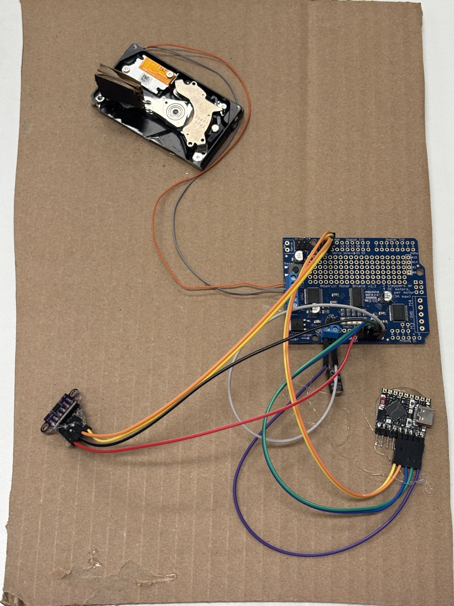
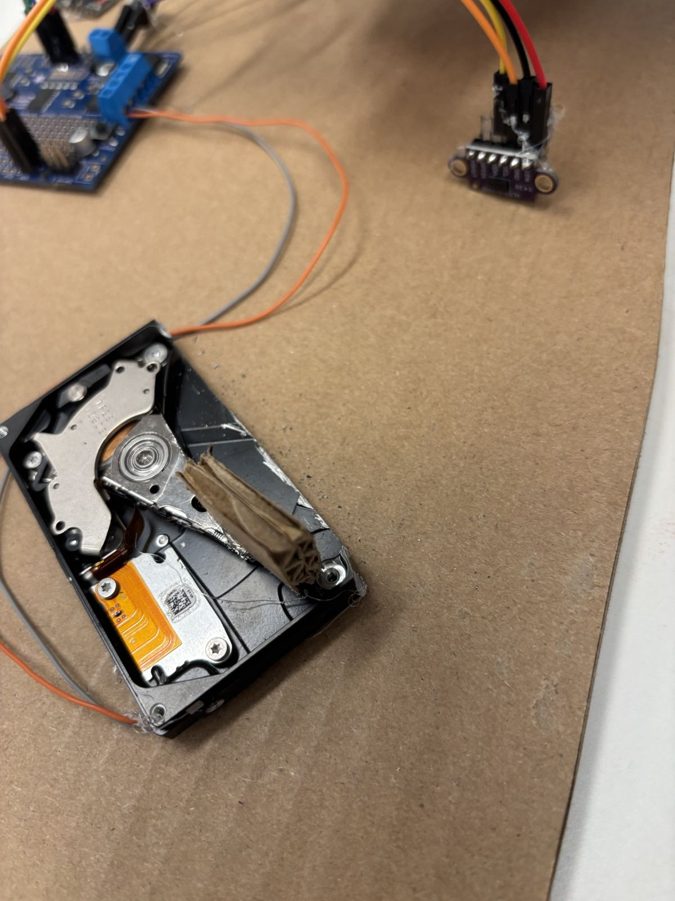
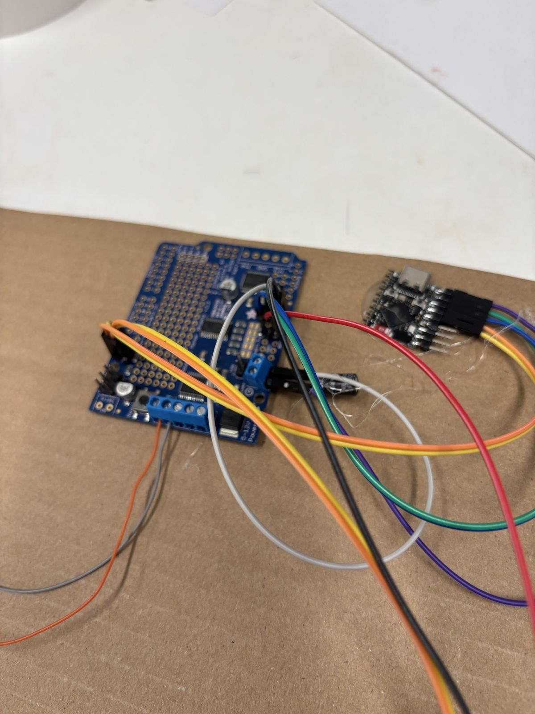
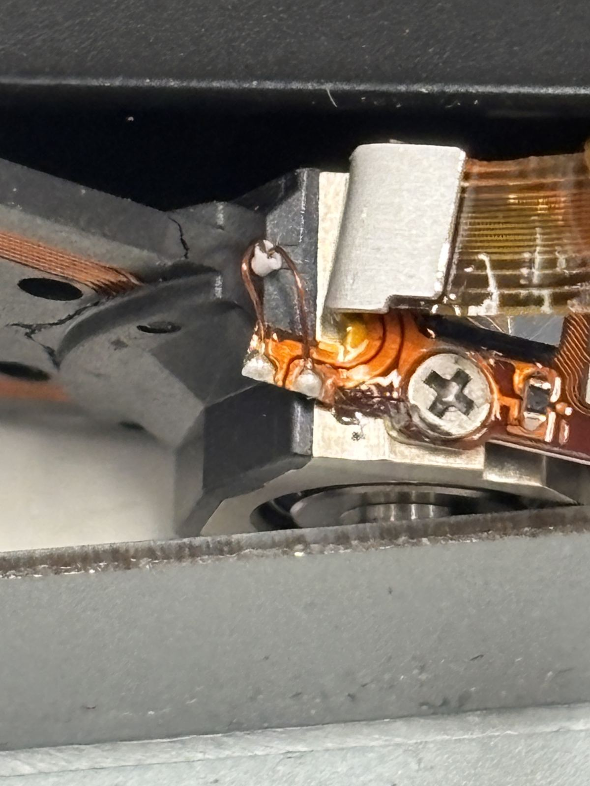
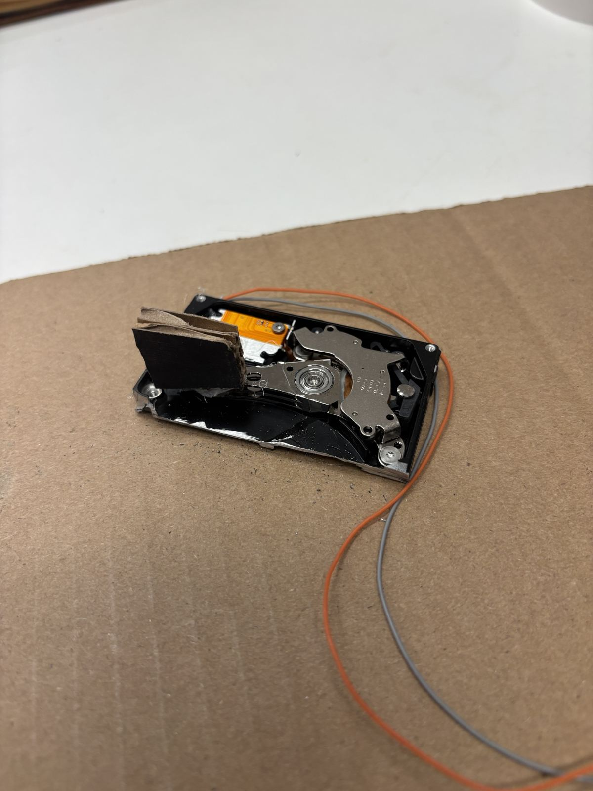

Back to the homeostat unit, redrawn
The first needle: a bench build
One unit of a wired four-unit homeostat, built on 4 November 2026 from a discarded hard drive, a motor shield from the parts pile, a ToF sensor from a drawer and a $4 ESP32. A hard drive's head arm stands in for Ashby's magnet and needle. This page records what was built, how it is wired and what it did.
A voice coil makes force, not position. With nothing pulling the arm back, any steady push runs it to an end stop. Ashby had water in the trough. Here the fix is sensing.
The VL53L0X tracked the arm across its full 30 mm of travel in 99% of readings, with about ±3 mm of jitter at rest. That is enough to close the loop.
A sketch that reads the arm and pushes only as hard as the gap to a target asks is written and flashed, not yet tuned on the arm.
On the bench



What we did
- Opened the drive. A 2.5 in Seagate (500 GB, discarded). Platters out, head arm left on its pivot with the flat voice coil between the two magnet plates behind it. The coil is the motor; the tips carry the read heads and are not used.
- Broke out the coil. Two thin enamelled wires run from the coil to solder pads on the flex. Measured first (10.3 Ω), then soldered thin flexible wire to the pads with a slack loop and strain relief so the arm can swing.
- Flick test. A AAA cell across the coil flicked the arm hard to one end, reversed it flicked to the other. Coil, leads and polarity all good.
- Chose a driver. The coil needs current both ways, so it needs an H-bridge. An ESP32 pin gives about 20 mA; the coil wants about 0.5 A. The Adafruit Motor Shield v2.3 from the pile has two TB6612 H-bridges and is driven over I2C, so one port drives one coil.
- Wired the shield to the SuperMini with jumpers (Fig. 1): logic jumper moved to 3v, VIN jumper off, coil on M1, motor power from the SuperMini's 5V pin with a 100 µF capacitor.
- Swept the coil. The arm moves, but sticks, then flicks end to end, and the shield's 1.6 kHz PWM whines.
- Added the ToF. The board is labelled VL53L0/1X V2 and fits either chip; reading its ID register showed a VL53L0X. Same I2C bus as the shield.
- Lined it up. A live range page showed distance, jitter and a 10 s trace. At 200 mm the beam is wider than the flag; at 100 mm a small target read 180, so the page gained a two-point calibration against a ruler.
- Ran both together and logged 1,240 readings of arm position against coil drive (Fig. 3).


Fig. 1: The bench rig
Everything on the I2C bus shares two wires. The shield answers at 0x60 (and 0x70), the ToF at 0x29.
Connections
| From | To | Why |
|---|---|---|
| SuperMini 3V3 | Shield 3v | Shield logic at 3.3 V, so the I2C lines never see 5 V |
| SuperMini GND | Shield Gnd | |
| SuperMini GPIO12 | Shield SDA | I2C data |
| SuperMini GPIO13 | Shield SCL | I2C clock |
| SuperMini 5V | Shield motor power + | USB power, fine for one coil at up to 50% drive |
| SuperMini GND | Shield motor power − | |
| 100 µF, 25 V | Across motor power, stripe to − | Covers the coil's bursts of current |
| Voice coil | Shield M1, the two outer screws | The middle screw is GND, not part of M1 |
| VL53L0X VIN, GND | 3V3, GND | XSHUT and GPIO1 left unconnected |
| VL53L0X SDA, SCL | GPIO12, GPIO13 | Shares the bus with the shield |
Shield preparation
- Logic jumper: the solder jumper marked "logic: 3v / 5v" ships on 5v. Cut the 5v trace and bridge 3v. The ESP32-S3 is not 5 V tolerant.
- VIN jumper: pull it off. With no Arduino under the shield it only ties motor power to the VIN pin.
- The shield is Uno shaped, so it is jumpered, not plugged in. The proto area is big enough to mount a SuperMini and the unit's sense resistors on it later.
Fig. 2: The needle
Top view of the drive with its platters out. The coil sits behind the pivot between two magnet plates; current through it swings the arm between its two end stops. A flag on the arm tip faces the ToF, which reads the tip's movement along its beam.
- Flag: white and matte, at least 30 mm wide. Black returns too little light; shiny surfaces throw the beam away.
- Distance: 80 to 100 mm. The beam spreads in a cone, about 45 mm wide at 100 mm and 90 mm at 200 mm, and anything past the flag drags the reading long.
- More travel: a light extension on the tip (a carbon rod, straw or skewer) lengthens the pointer and multiplies the movement the sensor sees.
Fig. 3: What the sensor saw
Twelve seconds of the open-loop sweep: the coil drive ramps between −100% and +100% of a 50% ceiling every six seconds while the ToF reads the arm about 55 times a second.
| Drive | Arm reading | Reading it |
|---|---|---|
| −100% to −20% | about 172 mm | Parked on one end stop |
| −20% to +20% | jumps across | Sticks until the push beats the bearing's grip, then flicks |
| +20% to +100% | about 142 mm | Parked on the other end stop |
- Hysteresis: rising, the arm flips later than falling (median 162 mm against 147 mm across the middle band). That lag is the bearing's sticking friction.
- One glitch: at full negative drive early in the run the reading jumped to 545 mm for a tenth of a second, most likely the flag tilting as the arm bounced off its stop.
- Jitter at rest was about ±3 mm against 30 mm of travel: roughly ten distinguishable positions now, more with the sensor closer or a longer pointer.
Why these parts
| Option | Verdict |
|---|---|
| ESP32 pin straight to the coil | No. About 20 mA safe per pin against 0.5 A, no protection from the coil's kickback. Two pins with a 150 Ω resistor will twitch it, nothing more. |
| ULN2003, ULN2803 | No. They only switch to ground, so they push one way. Good for relays and lamps. |
| CD4017, 4N35 | Not drivers. Set aside: a 4017 makes a ten-step uniselector, a 4N35 can play relay F. |
| L293D | Works, but loses about 2.5 V of a 5 V supply. |
| Adafruit Motor Shield v2.3 (TB6612) | Used. Two-way, 1.2 A per port, four ports, I2C. Its PWM tops out at 1.6 kHz, so it whines. |
| DRV8833 | Best for the four-unit build. Driven straight from the ESP32 at 20 kHz or more, so silent, and brakes the coil between pulses. |
Firmware
All in wired/ in this repository, for an ESP32-S3 SuperMini with USB CDC on boot.
| Sketch | What it does |
|---|---|
coil_sweep_test | Sweeps the coil; serial commands to hold, knock, brake and release |
tof_identify | Scans the I2C bus and tells a VL53L0X from a VL53L1X |
tof_range_stream | Raw distance at about 50 readings a second, for lining up |
sweep_and_sense | Sweeps the coil and streams distance with drive (Fig. 3) |
arm_hold_test | Closed loop: holds the arm at a target with a stiction kick and speed braking. Not yet tuned |
tools/range_view.py | Local live page: distance, jitter, drive, end check, calibration, CSV log |
Parts
| Part | Source | Paid |
|---|---|---|
| Seagate 2.5 in 500 GB hard drive: head arm and voice coil | Salvaged, discarded | $0 |
| Adafruit Motor Shield v2.3 | Salvaged, parts pile | $0 |
| VL53L0X ToF sensor | Salvaged, drawer | $0 |
| ESP32-S3 SuperMini | Bought new | $4 |
| 100 µF 25 V capacitor, jumper wire | On hand | $0 |
Next
- Fit a white flag square to the tip, move the sensor in to about 80 mm, and recheck travel against jitter.
- Flash
arm_hold_test, mark the two ends, and tune it until the arm settles part way instead of flicking. - Then the homeostat itself: sense resistors on three inputs, the output loop, the software uniselector, and three more units wired in series as on the redrawn unit page.